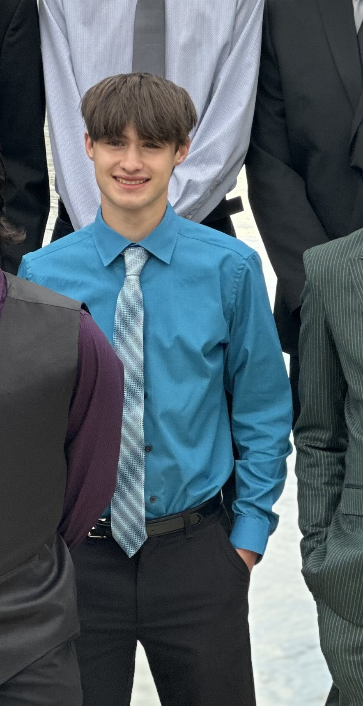
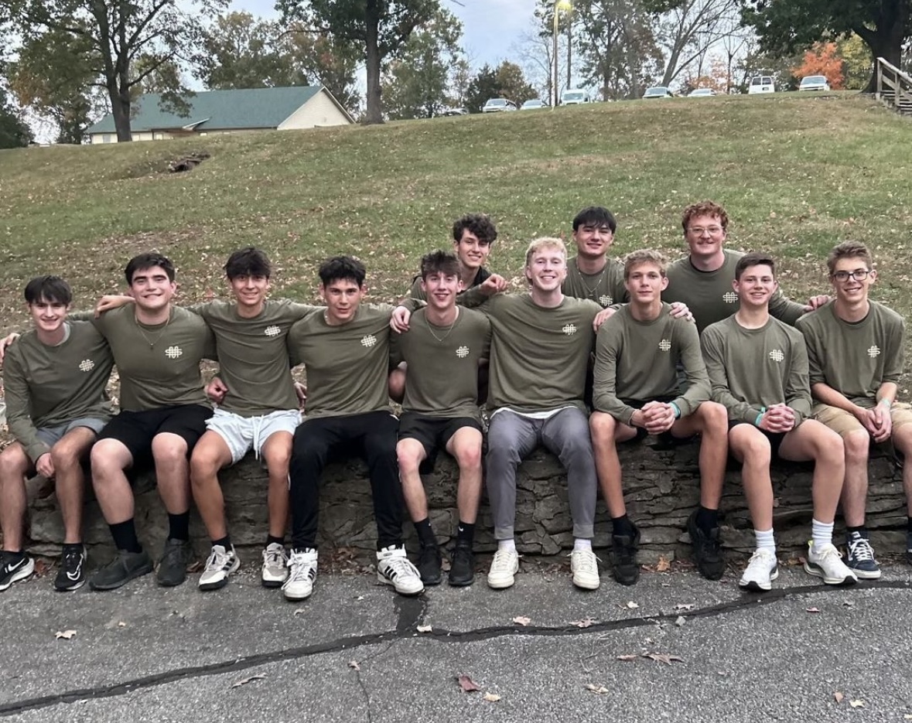
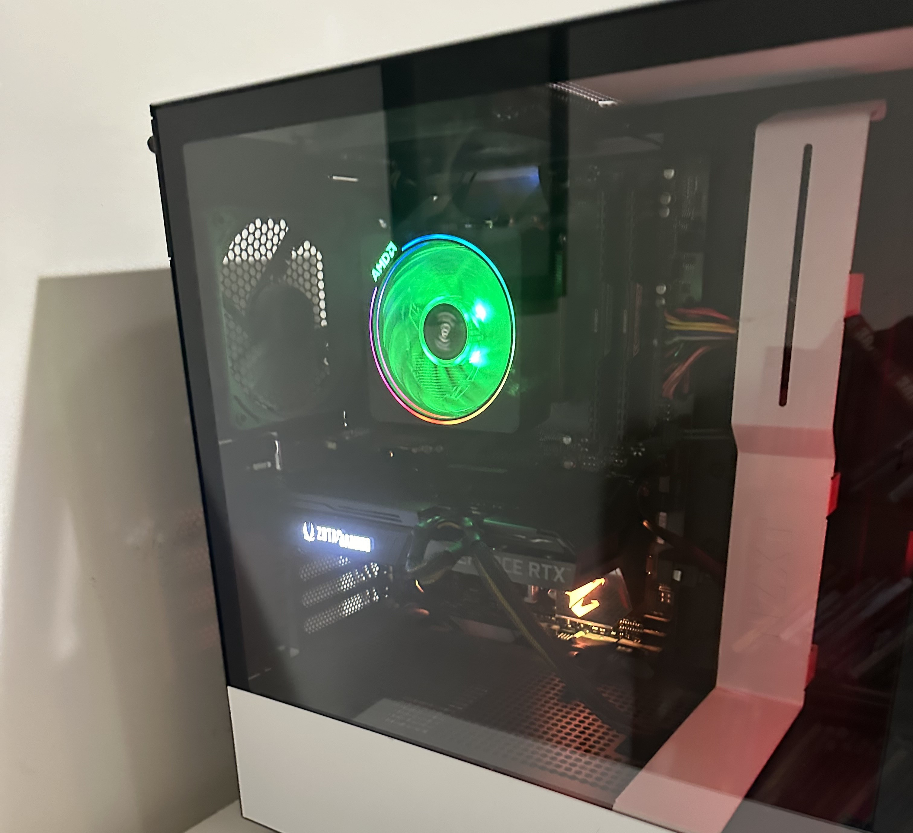

Me
My name is Jack Otten, and I'm a 17-year-old senior in high school, dedicated to both my academics and extracurricular activities. I proudly maintain straight A's while balancing a rigorous schedule of CCP, AP, and college classes. As the captain of my cross country team and a leader in track, I take pride in inspiring my teammates and fostering a sense of camaraderie. My commitment to excellence extends beyond sports; I consistently strive to do my best in all areas of my life, whether it's studying for exams or pushing through challenges on the field.
Beliefs
Outside of school, I find great joy in my involvement with the student ministry at my church, where I teach children about God and engage them in meaningful discussions. This experience has deepened my passion for education and sharing my faith, and I envision a future where I can continue to guide and inspire others, either as a full-time career or a rewarding side pursuit. I go to church every Sunday night where I can talk about God with friends and deeper understand my faith and live through holy friendships. I have a close-knit group of friends with whom I enjoy spending my limited free time with. Whether we're hanging out in person or diving into our favorite video games, I love spending time and having fun with them.
Technology
In my free time, I dive into the world of technology, whether it's gaming, building PCs, or staying updated on the latest advancements. I play a variety of games on my PC, like Fortnite, Rocket League, Minecraft, Roblox, Overwatch, and many others. I also enjoy coding and web development; I've even created a few games like Coconut Collector and Rock Clicker (a spin on Cookie Clicker). My passion for technology runs deep, and as I head to college next year, I'm excited to keep learning, experimenting, and exploring this field.